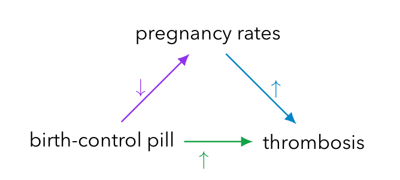
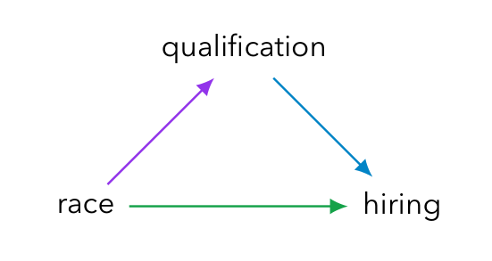
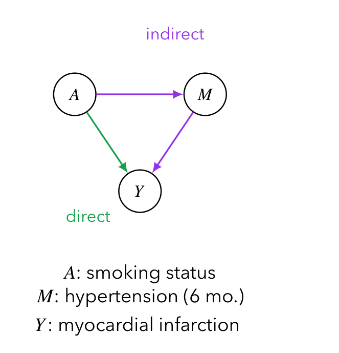
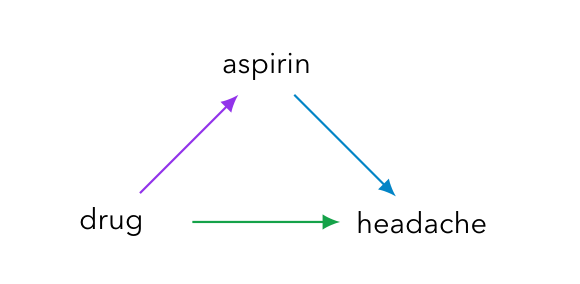
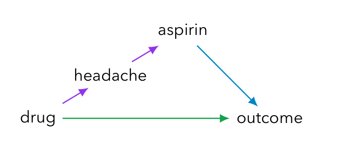
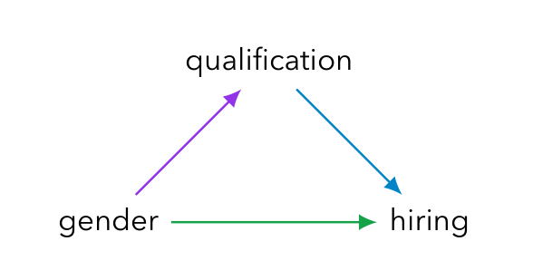
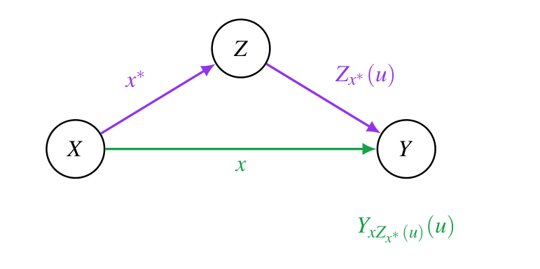
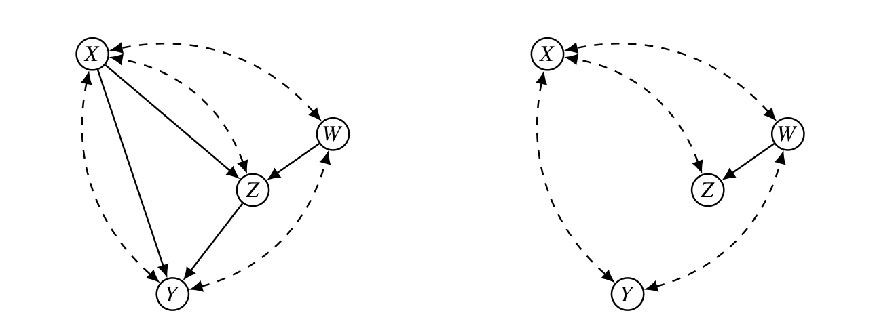
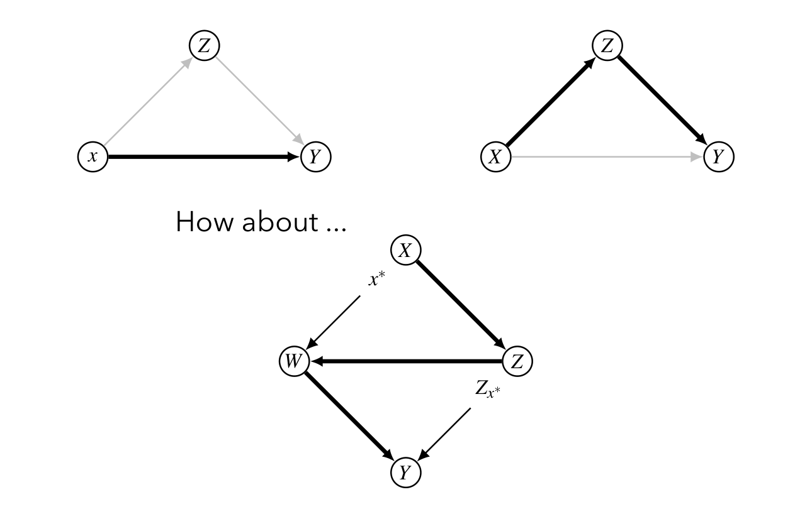
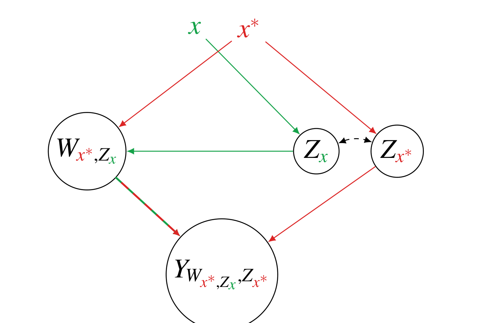

본 포스트는 서울대학교 GSDS Sanghack Lee 교수님의 Causal Inference 강의 자료(Direct and Indirect Effects)를 바탕으로, 강의를 처음 듣는 독자도 논리적 흐름을 따라갈 수 있도록 재구성한 것입니다. 강의는 Pearl (2001), Direct and Indirect Effects, UAI 2001을 뼈대로 삼으며, 반사실 세계 교차(cross-world) 문제와 매개 공식(mediation formula) 부분은 Hernán & Robins (2020) Causal Inference: What If 23장의 논의를 보강 자료로 사용합니다.
한 줄 요약 (TL;DR)
“직접효과는 중간변수를 ’고정’해서 정의할 수 있지만 간접효과는 그럴 수 없다. 대신 중간변수를 ’그 개체가 자연스럽게 취했을 값’으로 되돌리면, 직접효과와 간접효과를 모두 정의할 수 있다.”
전통적으로 직접효과는 모든 중간변수를 상수로 고정한 채 처치를 바꿔 재는 양으로 정의되어 왔습니다. 그런데 이 방식은 간접효과에는 통하지 않습니다. 어떤 변수를 고정해도 직접 경로 \(X \to Y\)를 막을 수는 없기 때문입니다. Pearl (2001)은 “고정(variable fixing)” 대신 “경로 전환(path switching)”이라는 발상을 제시합니다. 처치는 \(x\)로 두되 매개변수는 \(x^*\)였다면 자연스럽게 취했을 값 \(Z_{x^*}\)로 되돌리는 중첩 반사실량 \(Y_{x Z_{x^*}}\)을 도입하면, 자연 직접효과(NDE)와 자연 간접효과(NIE)가 비선형 모형에서도 잘 정의되고, 총효과가 두 성분으로 분해됩니다. 그 대가로 이 양은 동시에 관측할 수 없는 두 개의 개입 세계를 참조하게 되며, 식별에는 검정 불가능한 교차 세계 독립성 가정이 필요합니다.
1. 예비 개념 (Preliminaries)
본격적인 논의에 앞서 이 강의 전체에서 쓸 잠재 반응(potential response) 표기를 정리하겠습니다. 이 회차의 난이도는 사실상 표기의 난이도입니다. 아래 네 줄을 정확히 읽을 수 있으면 나머지는 따라옵니다.
- 구조적 인과 모형(SCM) 안에서 \(Y(u)\)는 단위 \(U = u\)에 대한 반응 변수 \(Y\)의 값입니다. 여기서 \(u\)는 그 개체의 모든 배경 요인(외생 변수)을 한꺼번에 지칭합니다.
- \(Y_x(u)\)는 같은 단위가 개입 \(do(X = x)\) 하에서 취하는 \(Y\)의 값입니다. 이를 모집단 수준으로 올리면 다음이 성립합니다.
\[ P(Y_x = y) = P(y \mid do(x)) \]
- \(Y_{xz}(u)\)는 결합 개입 \(do(X = x, Z = z)\) 하에서의 \(Y\) 값입니다. 처치와 매개변수를 둘 다 강제로 설정한 세계입니다.
- \(Z_{x^*}(u)\)는 기준 개입(reference intervention) \(do(X = x^*)\) 하에서 매개변수가 자연스럽게 취하게 될 값입니다.
이 네 가지를 조합하면 이 강의의 주인공이 나옵니다.
\[ Y_{x Z_{x^*}(u)}(u) \quad : \quad X = x \text{로 설정하되},\ Z \text{는 } X = x^* \text{였다면 취했을 값으로 설정한다} \]
바깥쪽 첨자 \(x\)와 안쪽 첨자 \(x^*\)가 서로 다르다는 점이 핵심입니다. \(Z\)의 자리에 상수 \(z\)가 아니라 또 다른 반사실량 \(Z_{x^*}(u)\)가 들어앉아 있기 때문에 이런 양을 중첩 반사실량(nested counterfactual)이라 부릅니다.
\(Y_{xz}\)처럼 \(Z\)를 상수 \(z\)로 못박으면, 모든 개체에 대해 같은 \(z\)를 강요하게 됩니다. 그런데 현실의 매개변수는 개체마다 다릅니다. \(Y_{x Z_{x^*}}\)는 개체별로 서로 다른 값을 \(Z\)에 넣되, 그 값이 “\(x^*\) 세계에서라면 그 개체가 자연스럽게 가졌을 값”이 되도록 맞춥니다. 즉 매개 경로만 \(x^*\) 세계에 묶어 두고 직접 경로만 \(x\)로 흘려보내는 장치입니다. §2.5에서 이 구분이 왜 정책적으로 중요한지 다시 보겠습니다.
2. 서론 (Introduction)
2.1 총효과 · 직접효과 · 간접효과
가장 단순한 매개 구조 \(X \to Z \to Y\), \(X \to Y\)를 놓고 세 가지 양을 구분하겠습니다.
- 총효과(total effect): 외부 개입으로 \(X\)를 \(x\)로 설정했을 때 \(Y\)의 분포가 변하는 정도입니다.
\[ P(Y_x = y) = P(y \mid do(x)) \]
- 직접효과(direct effects): 모든 중간변수를 상수로 고정한 채 측정합니다.
- 간접효과(indirect effects): 선형 시스템에서는 간접효과 \(=\) 총효과 \(-\) 직접효과입니다. 그러나 비선형 시스템에서는 어떤 변수를 고정하는 방식으로도 측정할 수 없습니다.
이 마지막 줄이 이 강의 전체의 출발점입니다.
2.2 직접효과와 간접효과를 정의한다는 것
직접효과의 정의는 세 층위로 정리됩니다.
| 층위 | 서술 |
|---|---|
| 비형식적 | “직접효과”란 모형 안의 다른 변수를 매개하지 않는 영향을 정량화하려는 개념입니다 |
| 좀 더 형식적 | 분석에 포함된 다른 모든 요인을 고정한 채 \(X\)의 변화에 대한 \(Y\)의 민감도입니다 |
| 그래프적 해석 | 그 요인들을 고정하면 \(X\)에서 \(Y\)로 가는 모든 인과 경로가 제거되고, 어떤 중간 변수에도 가로막히지 않는 직접 링크 \(X \to Y\)만 남습니다 |
간접효과에는 같은 논법을 쓸 수 없습니다. 어떤 변수 집합을 고정하더라도, 그 조건에서 측정한 \(X\)의 \(Y\)에 대한 효과가 직접 경로를 우회하도록 만들 수는 없기 때문입니다. 직접 링크 \(X \to Y\)가 존재한다면, 그것은 무엇을 고정하든 살아 있습니다.
그 결과 간접효과의 정의는 오랫동안 미완성 상태로 남아 있었습니다. 이 공백을 메우는 것이 Pearl (2001)의 목표입니다.
2.3 예시 ①: 총효과와 직접효과가 어긋나는 경우

경구 피임약은 혈전증 위험을 직접적으로는 증가시키지만, 임신율을 낮춤으로써 간접적으로는 감소시킵니다(임신 자체가 혈전증 위험 요인이므로).
그렇다면 왜 직접효과를 보아야 할까요?
- 직접효과는 생물학적으로 안정적(biologically stable)이며, 사회적 요인(예: 혼인 상태)에 불변입니다.
- 따라서 총효과보다 전이 가능(transportable)하고 정책적으로 더 유의미합니다.
- 요컨대 과학적 설명과 정책 분석에서 더 유용한 양입니다.
2.4 예시 ②: 고용에서의 인종·성차별

고용 차별 소송(인종 · 성별 등)에서 법원의 관심사는 채용 결정에 대한 직접효과이지, 자격 요건을 경유하는 간접효과가 아닙니다.
법적 판단 기준: 지원자의 인종이나 성별이 달랐다면, 다른 모든 조건이 같을 때 고용주가 같은 결정을 내렸겠는가?
2.5 예시 ③: 흡연 · 고혈압 · 심근경색

- 무작위 시험에서 금연(\(A = 0\))이 심근경색(\(Y\)) 위험을 낮춘다는 사실이 확인되었다고 합시다.
- 질문: 이 이득은 고혈압(\(M\))의 감소를 통해 작동하는 것일까요?
- 직접효과: \(M\)을 경유하지 않는 \(A \to Y\) (예: 산화 스트레스, 혈소판 작용)
- 간접효과: \(A \to M \to Y\) (흡연 \(\to\) 고혈압 \(\to\) 심근경색)
- 정책적 함의: 만약 흡연으로 인한 고혈압을 없애 주는 약이 있다면, 심근경색 예방 이득 중 얼마가 남을까요?
이 질문에 답하려면 총효과만으로는 부족하고, 효과를 두 성분으로 분해해야 합니다. (Hernán & Robins, 2020, Chapter 23)
2.6 예시 ④: 약물 · 아스피린 · 두통

- 어떤 약물에 두통이라는 부작용이 있습니다.
- 두통이 있는 환자는 아스피린을 복용하는 경향이 있고, 아스피린은 질병에 직접 작용하거나 다른 약물의 효과를 변조할 수 있습니다.
- 총효과는 기존의 아스피린 복용 패턴을 그대로 반영하는 반면, 직접효과는 아스피린 복용과 무관하게 약물 자체의 영향만 분리합니다.
여기서 직접효과는 “치료 기간 중 아스피린 복용을 권장할 것인가, 말릴 것인가”라는 질문에 대응하며, 다음 대비로 표현됩니다.
\[ P(Y_{xz} = y) - P(Y_{x^*z} = y) \]
여기서 \(z\)는 명시된 임의의 아스피린 복용 수준입니다.
- 선형 시스템에서 직접효과는 대응하는 경로 계수(path coefficient)로 완전히 결정되며, 중간변수를 어떤 값에 고정하든 동일합니다.
- 비선형 시스템에서는 그 고정값이 일반적으로 \(X\)가 \(Y\)에 미치는 효과를 변조하므로, 분석 대상 정책을 대표하도록 신중히 골라야 합니다.
\(\Rightarrow\) 이 지점에서 개념화의 두 갈래, 즉 처방적(prescriptive) 관점과 서술적(descriptive) 관점의 구분이 발생합니다.
2.7 서술적 관점 대 처방적 관점
이 절이 이 강의에서 가장 중요한 개념적 분기점입니다.
처방적 관점 = 통제 직접효과
- 질문: 아스피린 복용량을 미리 정한 수준 \(Z = z\)에 고정한 채 치료했다면, 치료받지 않았던 환자가 호전되었을까?
- 이 정식화는 통제되지 않은 조건에서의 실제 아스피린 복용량, 즉 개인의 자연스러운 행동에 의존하지 않습니다.
\[ P(Y_{xz} = y) - P(Y_{x^*z} = y) \]
서술적 관점 = 자연 직접효과
- 질문: 치료받지 않았던 환자가 치료를 받았다면 호전되었을까 — 단, 아스피린 복용량은 그 환자가 무처치 조건에서 현재 복용하고 있는 수준으로 유지한 채로.
- 이 정식화는 개인의 자연스러운 행동에 대한 지식을 요구합니다.
치료를 받을 때에만 아스피린을 복용하고, 아스피린이 있을 때에만 치료가 효과를 내는 환자를 생각해 봅시다.
- 자연 직접효과: 무처치 세계에서 이 환자는 아스피린을 먹지 않으므로, 아스피린을 그 수준(복용 안 함)에 묶어 둔 채 치료만 주면 효과가 없습니다. \(\Rightarrow\) 자연 직접효과는 0입니다.
- 통제 직접효과: 아스피린 수준을 “복용함”으로 고정하면 치료가 효과를 냅니다. \(\Rightarrow\) 통제 직접효과는 0이 아닙니다.
같은 개체, 같은 모형인데 두 정의가 정반대 답을 냅니다. 두 양은 이름이 비슷할 뿐 서로 다른 질문에 답합니다.
모집단 수준에서의 대비
개체가 아니라 모집단의 평균 직접효과를 추정하는 상황을 생각하면 두 관점의 성격이 분명해집니다.
| 관점 | 성격 | 답하는 질문 |
|---|---|---|
| 처방적 | 실용적(pragmatic) | 모든 환자에게 정해진 용량의 아스피린을 투여했을 때, 치료군과 비치료군의 회복률 차이는 얼마나 되는가 |
| 서술적 | 귀속적(attributional) | 관측된 회복률 개선이 치료 그 자체에 귀속되는가, 아니면 치료군에서 아스피린을 선호해 복용한 결과인가 |
2.8 왜 평균 자연 직접효과인가

- 제약사가 이 약물의 부작용인 두통을 제거할 방법을 고민하고 있다고 합시다.
- 자연스러운 질문은 “그래도 이 약이 관심 모집단에서 효능을 유지할 것인가”입니다.
- 통제 직접효과는 이 질문에 답하지 못합니다. 통제 직접효과는 모든 개인이 균일하게 복용하는 특정 아스피린 수준을 전제하기 때문입니다.
- 그러나 우리의 목표 모집단은 아스피린 복용량이 개인마다 다른 집단입니다. 그 차이는 약물 유발 두통 외의 요인에도 의존하며, 그 요인들은 약효 자체를 개인마다 다르게 만들 수도 있습니다.
- 따라서 우리가 평가해야 할 것은 평균 자연 직접효과입니다.
2.9 간접효과의 서술적 해석
앞서 간접효과에는 처방적 정의가 없다고 했습니다. 그러나 직접효과의 서술적 개념화는 간접효과로 그대로 이식(transport)할 수 있습니다.
- 예를 들어 특정 환자의 자연 간접효과를 평가하려면, 치료를 보류한 채 그 환자에게 치료를 받았더라면 복용했을 만큼의 아스피린을 주고 회복 여부를 묻습니다.
- 반면 처방적 정식화는 이식되지 않습니다. 어떤 변수를 고정하는 방식으로도 직접효과의 작동을 막을 방법이 없기 때문입니다.

간접효과의 실무적 함의는 자연 직접효과의 경우와 마찬가지로 비표준적 정책 선택지(nonstandard policy options)와 관련됩니다.
- 지원자에게 성별을 묻는 것을 불법화한다면(그리고 성별을 짐작할 다른 단서가 없다면), 채용에 남아 있는 성별 선호는 모두 성별이 채용에 미치는 간접효과에 귀속됩니다.
- 그렇다면 무질문 정책 시행 이전에 수집된 데이터로부터 그 선호의 크기를 알아낼 수 있는가? 바로 평균 간접효과가 그 답입니다.
3. 수학적 형식화 (Mathematization)
3.1 표기 (Notation)
- \(X\): 통제 변수(control variable) — 그 효과를 평가하려는 대상
- \(Y\): 반응 변수(response variable)
- \(Z\): \(X\)와 \(Y\) 사이의 모든 중간 변수의 집합
- \(Y_x(u)\): \(do(X = x)\)의 통제 하에서 단위 \(U = u\)의 \(Y\) 값
3.2 통제 직접효과 (Controlled Direct Effects, CDE)
인과 그래프 \(\mathcal{G}\)를 갖는 인과 모형 \(\mathcal{M}\)이 주어졌을 때, 단위 \(U = u\)에서 \(Z = z\)로 설정한 상태에서의 \(X = x\)의 \(Y\)에 대한 통제 직접효과는 다음과 같습니다.
\[ \mathrm{CDE}_z(x, x^*; Y, u) = Y_{xz}(u) - Y_{x^*z}(u) \]
모집단 수준에서 사건 \(X = x\)의 \(Y\)에 대한 통제 직접효과는 다음으로 정의됩니다.
\[ \mathrm{CDE}_z(x, x^*; Y) = \mathbb{E}[Y_{xz} - Y_{x^*z}] \]
여기서 기댓값은 \(u\)에 대해 취합니다.
여기서 쓰인 차이(difference)는 가장 흔한 척도일 뿐이며, 필요하면 비율 등 다른 적절한 관계식을 대신 쓸 수 있습니다.
CDE의 성격은 위 정의에서 곧바로 읽힙니다. \(z\)가 첨자로 남아 있다는 것, 즉 통제 직접효과는 하나의 수가 아니라 \(z\)로 색인된 값들의 모음이라는 점입니다. 비선형 모형에서는 \(z\)를 어디에 고정하느냐에 따라 값이 달라지므로, 어떤 \(z\)를 고를지가 곧 어떤 정책을 상정하는지를 결정합니다.
3.3 자연 직접효과 (Natural Direct Effects, NDE)
인과 그래프 \(\mathcal{G}\)를 갖는 인과 모형 \(\mathcal{M}\)이 주어졌을 때, 단위 \(U = u\)에서의 \(X = x\)의 \(Y\)에 대한 자연 직접효과는 다음과 같습니다.
\[ \mathrm{NDE}(x, x^*; Y, u) = Y_{x Z_{x^*}(u)}(u) - Y_{x^*}(u) \]
여기서 \(Z_{x^*}(u)\)는 \(X = x^*\)일 때의 \(z\) 값을 의미합니다. 모집단 수준의 평균 자연 직접효과는 다음으로 정의됩니다.
\[ \mathrm{NDE}(x, x^*; Y) = \mathbb{E}\!\left[Y_{x Z_{x^*}}\right] - \mathbb{E}\!\left[Y_{x^*}\right] \]
기댓값은 \(u\)에 대해 취합니다.

3.4 교차 세계 문제 (The Cross-World Problem)
이 정의는 우아하지만 공짜가 아닙니다. 대가를 정확히 짚고 넘어가야 합니다.
자연 직접효과는 교차 세계 반사실량(cross-world counterfactual) \(Y_{x Z_{x^*}}\)을 포함합니다. 처치는 \(x\)인데 매개변수는 \(x^*\) 하에서의 값으로 설정된 양입니다.
- 이 양은 두 개의 서로 다른 개입 세계를 동시에 참조합니다.
- 세계 1: \(X = x\) — 처치 \(x\) 하에서의 \(Y\)를 평가하기 위함
- 세계 2: \(X = x^*\) — 매개변수 값 \(Z_{x^*}\)를 결정하기 위함
- 어떤 실험도 — \(X\)와 \(Z\)를 동시에 무작위화하더라도 — 같은 개체에 대해 두 세계를 모두 관측할 수 없습니다.
- 따라서 NDE와 NIE는 원리적으로 경험적 검증이 불가능(empirically unverifiable in principle)합니다.
- 식별하려면 검정 불가능한 교차 세계 독립성 \(Y_{xz} \perp\!\!\!\perp Z_{x^*}\)을 가정해야 합니다.
(Hernán & Robins, 2020, Section 23.1; Robins & Richardson, 2010)
3.5 자연 직접효과의 실험적 식별
경험 데이터로부터 평균 자연 직접효과를 평가하기는 어렵습니다. 형식적으로 말하면,
\[ \mathrm{NDE}(x, x^*; Y) = \mathbb{E}\!\left(Y_{x Z_{x^*}}\right) - \mathbb{E}\!\left(Y_{x^*}\right) \]
는 \(P(Y_x = y)\)나 \(P(Y_{xz} = y)\) 형태의 표현식으로 환원되지 않습니다. 즉 \(X\)만 무작위화하거나 \(X\)와 \(Z\)를 함께 무작위화하는 것으로는 도달할 수 없는 양입니다.
이 논문은 2001년에 출판되었습니다. 그 이후 중첩 반사실량의 식별 이론이 상당히 발전하여, Shpitser & Pearl (2008)과 Correa, Lee, & Bareinboim (2021)의 결과들이 나와 있습니다. 아래에서 소개할 조건은 그 계보의 출발점에 해당합니다.
충분조건과 유도
\(X\)나 \(Z\)의 비후손(nondescendant)인 공변량 집합 \(W\)가 존재하여
\[ Y_{xz} \perp\!\!\!\perp Z_{x^*} \mid W \]
를 만족하면, 평균 자연 직접효과는 실험적으로 식별 가능합니다. 유도를 단계별로 따라가 보겠습니다.
1단계 (\(\mathbb{E}(Y_{x Z_{x^*}})\)의 전개). \(W\)와 \(Z_{x^*}\)에 대해 반복 기댓값(law of total expectation)을 적용합니다.
\[ \mathbb{E}\!\left(Y_{x Z_{x^*}}\right) = \sum_w \sum_z \mathbb{E}\!\left(Y_{xz} \mid Z_{x^*} = z,\, w\right) P(Z_{x^*} = z \mid w)\, P(w) \]
2단계 (교차 세계 독립성 적용). 가정 \(Y_{xz} \perp\!\!\!\perp Z_{x^*} \mid W\)에 의해 조건에서 \(Z_{x^*} = z\)를 지울 수 있습니다.
\[ \mathbb{E}\!\left(Y_{x Z_{x^*}}\right) = \sum_w \sum_z \mathbb{E}\!\left(Y_{xz} \mid w\right) P(Z_{x^*} = z \mid w)\, P(w) \]
3단계 (\(\mathbb{E}(Y_{x^*})\)를 같은 형태로 맞추기). 여기서 합성 공리(law of composition)를 씁니다. \(Z_{x^*}\)는 정의상 \(X = x^*\) 하에서 \(Z\)가 자연스럽게 취하는 값이므로, 그 값을 굳이 강제로 설정해도 아무것도 달라지지 않습니다.
\[ \mathbb{E}(Y_{x^*}) = \mathbb{E}\!\left(Y_{x^* Z_{x^*}}\right) = \sum_w \sum_z \mathbb{E}\!\left(Y_{x^*z} \mid w\right) P(Z_{x^*} = z \mid w)\, P(w) \]
4단계 (최종식). 두 식을 빼면 \(P(Z_{x^*} = z \mid w) P(w)\)가 공통 가중치로 묶입니다.
\[ \mathrm{NDE}(x, x^*; Y) = \sum_{w, z} \left[\mathbb{E}(Y_{xz} \mid w) - \mathbb{E}(Y_{x^*z} \mid w)\right] P(Z_{x^*} = z \mid w)\, P(w) \]
해석: 대괄호 안은 \(w\) 층 안에서의 통제 직접효과이고, 바깥의 \(P(Z_{x^*} = z \mid w) P(w)\)는 기준 세계 \(x^*\)에서의 매개변수 분포로 그것을 평균하는 가중치입니다. 즉 자연 직접효과는 “기준 세계의 매개변수 분포로 가중평균한 통제 직접효과”입니다. 앞서 §2.8에서 “특정 \(z\)에 균일하게 고정하는 대신 개인별 자연스러운 값을 쓴다”고 말한 것이 바로 이 가중치입니다.

3.6 마르코프 모형에서의 식별
마르코프 모형(Markovian model), 즉 잠재 교란자가 없는 모형에서는 상황이 훨씬 간단해집니다.
- 조건 \(Y_{xz} \perp\!\!\!\perp Z_{x^*} \mid W\)는 \(W = \emptyset\)일 때에도 성립합니다. 마르코프 모형에서 \(Y_{xz}\)는 모형 내 모든 변수와 독립이기 때문입니다.
- 이때 다음 세 관계가 성립합니다.
\[ P(Y_{xz} = y) = P(y \mid x, z), \qquad X \cup Z \text{는 } Y \text{의 부모 집합} \]
\[ P(Z_{x^*} = z) = \sum_s P(z \mid x^*, s)\, P(s) \]
\[ P\!\left(Y_{x, Z_{x^*}} = y\right) = \sum_s \sum_z P(y \mid x, z)\, P(z \mid x^*, s)\, P(s) \]
여기서 \(S\)는 \(X\)를 제외한 \(Z\)의 부모 집합이거나, 뒷문 기준(back-door criterion)을 만족하는 임의의 집합입니다.
- 따라서 마르코프 모형에서 평균 자연 직접효과는 비실험 데이터로부터 식별 가능합니다.
\[ \mathrm{NDE}_z(x, x^*; Y) = \sum_s \sum_z \left[\mathbb{E}(Y \mid x, z) - \mathbb{E}(Y \mid x^*, z)\right] P(z \mid x^*, s)\, P(s) \]
§3.5의 식은 \(\mathbb{E}(Y_{xz} \mid w)\)라는 개입 하의 양을 포함하고 있어서 실험(또는 추가 식별 논증)이 필요했습니다. 마르코프 가정 아래에서는 그 자리가 전부 관측 조건부 분포 \(\mathbb{E}(Y \mid x, z)\)와 \(P(z \mid x^*, s)\)로 대체됩니다. 즉 잠재 교란자가 없다면 자연 직접효과는 순수한 관측 데이터만으로 계산됩니다.
3.7 매개 공식 (The Mediation Formula)
가장 단순한 경우 — \(X \to Z \to Y\), \(X \to Y\)이고 \(Z\)–\(Y\) 사이에 교란이 없는 경우 — 마르코프 결과는 다음 매개 공식으로 단순화됩니다.
\[ \mathbb{E}\!\left[Y_{x, Z_{x^*}}\right] = \sum_z \mathbb{E}[Y \mid X = x,\, Z = z]\; P(Z = z \mid X = x^*) \]
직관: \(Y\)는 처치 \(x\) 하에서 평가하되, 매개변수의 분포는 처치 \(x^*\) 하에서 가져옵니다. 두 개의 세계에서 하나씩 재료를 꺼내 섞는 셈이며, 그래서 이 양이 어떤 단일 실험으로도 관측되지 않는 것입니다.
흡연 예시에 적용해 보겠습니다. (\(A\): 처치, \(M\): 매개변수 표기)
환자들이 계속 흡연했지만(\(a = 1\)), 금연자의 혈압을 가졌다면(\(a^* = 0\)) 심근경색 위험은 얼마였을까?
\[ \mathbb{E}\!\left[Y_{1, M_0}\right] = \sum_m \mathbb{E}[Y \mid A = 1,\, M = m]\; P(M = m \mid A = 0) \]
(Hernán & Robins, 2020, Section 23.1; Pearl, 2001)
4. 자연 간접효과 (Natural Indirect Effects)
4.1 정식화 (Formulation)
직접효과에서 쓴 장치를 그대로 뒤집으면 간접효과가 나옵니다. 이번에는 처치를 기준값 \(x^*\)에 두고, 매개변수만 \(x\) 세계의 값으로 바꿔치기합니다.
\[ \mathrm{NIE}(x, x^*; Y, u) = Y_{x^*, Z_x(u)}(u) - Y_{x^*}(u) \]
평균 간접효과는 다음으로 정의됩니다.
\[ \mathrm{NIE}(x, x^*; Y) = \mathbb{E}\!\left(Y_{x^*, Z_x}\right) - \mathbb{E}\!\left(Y_{x^*}\right) \]
이것이 §2.9에서 말로 서술했던 “치료를 보류한 채, 치료를 받았더라면 복용했을 만큼의 아스피린을 주는” 시나리오의 수식 표현입니다. 처치 자체는 주지 않으므로 직접 경로는 \(x^*\)에 머물러 있고, 매개변수만 \(x\) 세계의 값으로 움직입니다.
4.2 총효과의 분해
세 양을 나란히 놓아 보겠습니다.
\[ \begin{aligned} \mathrm{TE}(x, x^*; Y) &= \mathbb{E}(Y_x) - \mathbb{E}(Y_{x^*}) \\[4pt] \mathrm{NDE}(x, x^*; Y) &= \mathbb{E}\!\left(Y_{x Z_{x^*}}\right) - \mathbb{E}(Y_{x^*}) \\[4pt] \mathrm{NIE}(x, x^*; Y) &= \mathbb{E}\!\left(Y_{x^*, Z_x}\right) - \mathbb{E}(Y_{x^*}) \end{aligned} \]
여기서 NIE의 인자 순서를 뒤집은 양을 계산해 보면 흥미로운 일이 생깁니다. 정의에서 \(x \leftrightarrow x^*\)를 맞바꾸면
\[ \mathrm{NIE}(x^*, x; Y) = \mathbb{E}\!\left(Y_{x, Z_{x^*}}\right) - \mathbb{E}(Y_x) \quad\Longrightarrow\quad -\mathrm{NIE}(x^*, x; Y) = -\mathbb{E}\!\left(Y_{x, Z_{x^*}}\right) + \mathbb{E}(Y_x) \]
이제 NDE와 더하면 \(\mathbb{E}(Y_{x Z_{x^*}})\) 항이 정확히 소거됩니다.
\[ \mathrm{NDE}(x, x^*; Y) - \mathrm{NIE}(x^*, x; Y) = \underbrace{\mathbb{E}\!\left(Y_{x Z_{x^*}}\right) - \mathbb{E}(Y_{x^*})}_{\mathrm{NDE}} \underbrace{- \mathbb{E}\!\left(Y_{x, Z_{x^*}}\right) + \mathbb{E}(Y_x)}_{-\mathrm{NIE}(x^*, x)} = \mathbb{E}(Y_x) - \mathbb{E}(Y_{x^*}) \]
\[ \mathrm{TE}(x, x^*; Y) = \mathrm{NDE}(x, x^*; Y) - \mathrm{NIE}(x^*, x; Y) \]
뺄셈이고, 간접효과의 인자 순서가 뒤집혀 있다는 점에 주의해야 합니다. 이 관계가 낯설어 보이지만, 선형 모형에서는 우리에게 익숙한 덧셈 관계를 그대로 재현합니다.
\[ \mathrm{TE}(x, x^*; Y) = \mathrm{NDE}(x, x^*; Y) + \mathrm{NIE}(x, x^*; Y) \]
선형 가법 모형에서는 \(\mathrm{NIE}(x^*, x; Y) = -\mathrm{NIE}(x, x^*; Y)\)가 성립합니다(부록의 계산에서 \(\mathrm{NIE} = \gamma\alpha(x - x^*)\)이므로 인자를 뒤집으면 부호만 바뀝니다). 그래서 뺄셈이 덧셈으로 바뀝니다.
비선형 모형에서는 이 반대칭성이 깨집니다. \(\mathrm{NIE}(x^*, x; Y)\)는 기준 세계를 \(x\)로 두고 잰 간접효과이므로, 기준을 \(x^*\)로 두고 잰 \(\mathrm{NIE}(x, x^*; Y)\)와 크기가 다를 수 있습니다. 분해가 정확히 성립하려면 어느 쪽을 기준 세계로 삼았는지를 끝까지 추적해야 한다는 것이 이 식의 교훈입니다.
4.3 자연 간접효과의 식별
NDE와 같은 구조의 조건이 필요합니다. \(X\)나 \(Z\)의 비후손인 공변량 집합 \(W\)가 존재하여 모든 \(x\)와 \(z\)에 대해
\[ Y_{x^*z} \perp\!\!\!\perp Z_x \mid W \]
가 성립하면, 평균 간접효과는 실험적으로 식별 가능합니다.
\[ \mathrm{NIE}(x, x^*; Y) = \sum_{w, z} \mathbb{E}(Y_{x^*z} \mid w)\left[P(Z_x = z \mid w) - P(Z_{x^*} = z \mid w)\right] P(w) \]
해석: 대괄호 안은 처치가 매개변수 분포를 얼마나 이동시키는가이고, 앞의 \(\mathbb{E}(Y_{x^*z} \mid w)\)는 기준 세계 \(x^*\)에서 매개변수 값 \(z\)가 결과에 얼마나 기여하는가입니다. 즉 간접효과는 “매개변수 분포의 이동량 \(\times\) 그 매개변수의 결과 민감도”로 읽힙니다. NDE가 결과 쪽 대비를 매개변수 분포로 가중평균했다면, NIE는 매개변수 쪽 대비를 결과 민감도로 가중평균합니다. 두 식이 정확히 쌍대(dual) 관계에 있습니다.
- 비실험 연구에서는 \(\mathbb{E}(Y_{x^*z} \mid w)\), \(P(Z_x = z \mid w)\), \(P(Z_{x^*} = z \mid w)\)가 각각 식별 가능할 때 평균 간접효과가 식별됩니다.
- 단순한 마르코프 모형에서는 위 식이 다음으로 단순화됩니다.
\[ \mathrm{NIE}(x, x^*; Y) = \sum_z \mathbb{E}(Y \mid x^*, z)\left[P(z \mid x) - P(z \mid x^*)\right] \]
5. 경로별 효과 (Path-Specific Effects)
5.1 문제의 일반화
지금까지는 “직접 경로”와 “간접 경로” 두 갈래만 다뤘습니다. 그런데 매개 구조가 조금만 복잡해져도 경로는 여럿으로 갈라집니다. 그렇다면 임의로 지정한 경로 집합의 효과를 어떻게 정의해야 할까요?

5.2 정의: 경로별 효과
\(\mathcal{G}\)를 모형 \(\mathcal{M}\)에 결부된 인과 그래프라 하고, \(g\)를 효과 분석의 대상으로 선택된 경로들을 담은 \(\mathcal{G}\)의 엣지 부분그래프(edge-subgraph)라 하자. 기준 \(x^*\)에 상대적인, \(x\)의 \(Y\)에 대한 \(g\)-특정 효과(\(g\)-specific effect)는 다음과 같이 구성된 수정 모형 \(\mathcal{M}^*_g\)에서의 총효과로 정의된다.
\(\mathcal{G}\)의 각 부모 집합 \(\mathrm{PA}_i\)를 두 부분으로 분할한다.
\[ \mathrm{PA}_i = \{\mathrm{PA}_i(g),\ \mathrm{PA}_i(\bar{g})\} \]
여기서 \(\mathrm{PA}_i(g)\)는 \(g\) 안에서 \(X_i\)와 연결된 부모들이고, \(\mathrm{PA}_i(\bar{g})\)는 \(g\) 안에서 \(X_i\)로 가는 링크가 없는 여집합이다. 각 함수 \(f_i(\mathit{pa}_i, u)\)를 다음의 새 함수로 대체한다.
\[ f_i^*(\mathit{pa}_i, u; g) = f_i\!\left(\mathit{pa}_i(g),\ \mathit{pa}_i^*(\bar{g}),\ u\right) \]
여기서 \(\mathit{pa}_i^*(\bar{g})\)는 \(\mathrm{PA}_i(\bar{g})\)의 변수들이 원 모형 \(\mathcal{M}\)과 단위 \(u\) 하에서 \(X = x^*\)일 때 취하게 될 값이다. 즉 \(\mathit{pa}_i^*(\bar{g}) = \mathrm{PA}_i(\bar{g})_{x^*}\)이다. \(x\)의 \(Y\)에 대한 \(g\)-특정 효과 \(\mathrm{SE}_g(x, x^*; Y, u)_\mathcal{M}\)은 다음으로 정의된다.
\[ \mathrm{SE}_g(x, x^*; Y, u)_\mathcal{M} = \mathrm{TE}(x, x^*; Y, u)_{\mathcal{M}^*_g} \]
정의를 뜯어 보겠습니다.
- 각 노드마다 부모들을 “선택된 경로에 속하는 부모”와 “그렇지 않은 부모”로 갈라 놓습니다.
- 구조 함수는 그대로 두되, 선택되지 않은 부모들의 입력만 기준 세계 \(x^*\)의 값으로 얼려 둡니다.
- 그렇게 만든 모형에서 \(x\) 대 \(x^*\)의 총효과를 재면, 그것이 곧 선택된 경로들만을 통과한 효과가 됩니다.
전통적 접근은 변수를 상수에 고정했습니다. 이 정의는 변수의 입력을 다른 세계의 값으로 전환합니다. 차이가 결정적입니다.
- 변수 고정: 그 변수가 관여하는 모든 경로가 동시에 죽습니다. 그래서 직접 경로만 남기는 것은 되지만, 직접 경로만 죽이는 것은 안 됩니다.
- 경로 전환: 엣지 단위로 어느 세계의 값을 흘려보낼지 고를 수 있습니다. 따라서 직접 경로만 \(x^*\)에 묶고 매개 경로만 \(x\)로 흘려보내는 것도 가능해집니다.
NDE와 NIE는 이 일반 정의에서 \(g\)를 각각 “직접 엣지만”과 “매개 경로만”으로 잡은 특수 사례입니다.
5.3 중첩 반사실량을 담은 반사실 그래프

경로가 늘어나면 첨자도 함께 중첩됩니다. 위 그림의 결과 노드는
\[ Y_{W_{x^*, Z_x},\ Z_{x^*}} \]
로, \(Y\)의 첨자 안에 \(W\)가 들어가고 그 \(W\)의 첨자 안에 다시 \(Z_x\)가 들어가는 구조입니다. 경로별 효과의 식별 문제가 일반적으로 어려운 이유가 여기에 있습니다.
6. 결론 (Conclusions)
강의가 정리하는 이 논문의 기여는 다음과 같습니다.
- 이 논문은 경로 전환(path switching)에 기반한 경로별 효과의 새로운 정의를 도입합니다.
- 변수 고정(variable fixing)에 의존하는 전통적 접근과 달리, 이 틀은 직접효과와 간접효과의 해석과 추정을 비선형 모형으로 확장합니다.
- 특정 조건 하에서는 \(Z\)가 \(X\)의 영향을 받는 경우에도 이 효과들이 식별 가능합니다.
- 그 조건은 마르코프 모형에서는 항상 만족됩니다.
- 제안된 정의는 간접효과에 대한 실무적(operational) 해석도 함께 제공합니다.
부록 (Appendix)
A.1 선형 가법 관계 (Linear Additive Relation)
선형 가법 매개 모형을 생각합니다.
\[ Z = \alpha X + U_Z, \qquad Y = \beta X + \gamma Z + U_Y \]
\(x\) 대 \(x^*\)의 대비에 대해, 매개변수의 반사실값은 다음과 같습니다. 오차항 \(U_Z\)가 두 세계에서 동일하다는 점이 중요합니다(같은 단위 \(u\)이므로).
\[ Z_x = \alpha x + U_Z, \qquad Z_{x^*} = \alpha x^* + U_Z \]
이제 세 양을 차례로 계산합니다.
\[ \begin{aligned} \mathrm{TE}(x, x^*; Y) &= \mathbb{E}(Y_x) - \mathbb{E}(Y_{x^*}) = (\beta + \gamma\alpha)(x - x^*) \\[4pt] \mathrm{NDE}(x, x^*; Y) &= \mathbb{E}\!\left(Y_{x, Z_{x^*}}\right) - \mathbb{E}(Y_{x^*}) = \beta\,(x - x^*) \\[4pt] \mathrm{NIE}(x, x^*; Y) &= \mathbb{E}\!\left(Y_{x^*, Z_x}\right) - \mathbb{E}(Y_{x^*}) = \gamma\alpha\,(x - x^*) \end{aligned} \]
세 결과를 합치면 익숙한 분해가 나옵니다.
\[ \mathrm{TE}(x, x^*; Y) = \mathrm{NDE}(x, x^*; Y) + \mathrm{NIE}(x, x^*; Y) \]
위 계산은 선형 가법 · 교호작용 없음(no-interaction) 형태를 전제로 합니다. 비선형 모형에서는 일반적으로 이런 같은 방향의 합 관계가 보존되지 않습니다. §4.2에서 본 것처럼 일반적인 관계는 \(\mathrm{TE} = \mathrm{NDE}(x, x^*) - \mathrm{NIE}(x^*, x)\)이며, 여기서 \(\mathrm{NIE}\)의 인자 순서를 뒤집는 것이 부호를 뒤집는 것과 같아지는 것은 선형의 특권입니다.
A.2 합성 (Composition)
임의의 단일 변수 \(Y\), \(W\)와 인과 모형 내 임의의 변수 집합 \(X\)에 대해 다음이 성립합니다.
\[ W_x(u) = w \implies Y_{xw}(u) = Y_x(u) \]
합성이 말하는 바는, 어떤 변수 \(W\)를 “개입하지 않았어도 어차피 가졌을 값”으로 강제로 설정한다면, 그 개입은 시스템의 다른 변수에 아무런 영향을 주지 않는다는 것입니다. §3.5의 3단계에서 \(\mathbb{E}(Y_{x^*}) = \mathbb{E}(Y_{x^* Z_{x^*}})\)로 넘어갈 때 쓴 것이 바로 이 성질입니다.
A.3 일관성 (Consistency)
인과 모형 내 임의의 변수 \(Y\)와 \(X\)에 대해 다음이 성립합니다.
\[ X(u) = x \implies Y(u) = Y_x(u) \]
실제로 관측된 처치값이 \(x\)인 단위에 대해서는, 관측된 결과가 곧 \(x\) 하의 잠재 결과와 같습니다. 잠재 결과 틀에서 관측 데이터와 반사실량을 잇는 가장 기본적인 다리이며, 합성의 특수 사례(\(X\)가 공집합인 경우)로도 읽을 수 있습니다.
A.4 유효성과 가역성 (Effectiveness and Reversibility)
유효성(effectiveness): 모든 변수 \(X\)와 \(W\)에 대해
\[ X_{xw}(u) = x \]
가역성(reversibility, Property 3): 임의의 두 변수 \(Y\), \(W\)와 임의의 변수 집합 \(X\)에 대해
\[ \left(Y_{xw}(u) = y\right)\ \&\ \left(W_{xy}(u) = w\right) \implies Y_x(u) = y \]
- 유효성은 “\(X\)를 \(x\)로 설정하면 실제로 \(X\)가 \(x\)가 된다”는, 개입 연산자의 최소 요건입니다.
- 가역성은 두 변수 \(Y\)와 \(W\)가 서로를 지정하는 관계가 상호 정합적임을 요구합니다. 즉 \(W = w\) 하에서 \(Y = y\)이고 동시에 \(Y = y\) 하에서 \(W = w\)라면, 그 \((y, w)\) 쌍이 곧 자연스러운 해입니다. 순환 없는(acyclic) 모형에서 유일한 해가 존재함을 보증하는 성질에 해당합니다.
정리하며 (Closing Remarks)
이 강의의 논리 사슬을 한 장으로 요약하면 다음과 같습니다.
| 단계 | 내용 | 근거 |
|---|---|---|
| ① 문제 제기 | 직접효과는 “중간변수 고정”으로 정의되지만, 같은 방식으로 간접효과를 정의할 수 없다 — 무엇을 고정해도 직접 경로는 살아남는다 | §2.2 |
| ② 두 갈래의 개념화 | 처방적(통제 직접효과, CDE) vs 서술적(자연 직접효과, NDE). 같은 개체에서 정반대 답이 나올 수 있다 | §2.7 아스피린 예시 |
| ③ 왜 자연효과인가 | 부작용만 제거하는 정책의 효능을 물으려면 균일한 \(z\)가 아니라 개체별 자연값이 필요하다 | §2.8 |
| ④ 형식화 | \(Y_{x Z_{x^*}}\) — 직접 경로엔 \(x\), 매개 경로엔 \(x^*\)를 흘려보내는 중첩 반사실량 | §3.3, Figure(NDE) |
| ⑤ 대가 | 두 개입 세계를 동시에 참조하므로 어떤 실험으로도 검증 불가. 교차 세계 독립성이라는 검정 불가능 가정이 필요 | §3.4 |
| ⑥ 식별 | \(Y_{xz} \perp\!\!\!\perp Z_{x^*} \mid W\) 하에서 NDE는 “\(w\)층 내 CDE를 기준 세계 매개변수 분포로 가중평균”한 값 | §3.5 |
| ⑦ 마르코프 특권 | 잠재 교란자가 없으면 \(W = \emptyset\)으로 충분하고, 모든 항이 관측 조건부 분포로 환원 → 매개 공식 | §3.6–3.7 |
| ⑧ 쌍대 구조 | NIE는 “매개변수 분포 이동량 \(\times\) 결과 민감도”. TE \(=\) NDE\((x,x^*)\) \(-\) NIE\((x^*,x)\), 선형에서만 덧셈 | §4.2–4.3, 부록 A.1 |
| ⑨ 일반화 | 직접/간접은 엣지 부분그래프 \(g\)를 고르는 경로별 효과의 두 특수 사례 | §5.2 |
개인적인 감상 몇 가지를 덧붙입니다.
- 가장 인상적인 지점은 “고정에서 전환으로”라는 발상의 전환 그 자체입니다. 전통적 접근이 막힌 이유는 도구가 부족해서가 아니라 연산의 단위가 잘못되어 있었기 때문입니다. \(do(Z = z)\)는 노드 단위 연산이라 그 노드를 지나는 모든 경로를 한꺼번에 죽입니다. Pearl은 개입의 단위를 엣지(정확히는 각 노드의 부모 슬롯)로 내려서, “이 입력만 다른 세계에서 가져온다”는 훨씬 섬세한 조작을 가능하게 만들었습니다. 경로별 효과 정의에서 \(\mathrm{PA}_i\)를 \(\mathrm{PA}_i(g)\)와 \(\mathrm{PA}_i(\bar g)\)로 쪼개는 한 줄이 이 강의 전체의 핵심입니다.
- 그러나 대가를 정직하게 청구한다는 점도 인상적입니다. 강의는 자연효과를 소개한 직후에 곧바로 교차 세계 문제를 배치합니다. 조정집합이나 도구변수는 원리상 더 좋은 실험을 하면 검증할 수 있는 가정에 기대지만, \(Y_{xz} \perp\!\!\!\perp Z_{x^*}\)는 어떤 실험으로도 반증할 수 없습니다. 매개 분석이 응용 분야에서 자주 남용되는 이유도 여기에 있다고 봅니다 — 소프트웨어가 숫자를 뱉어 주지만, 그 숫자를 뒷받침하는 가정은 데이터가 결코 반박해 주지 않습니다.
- 분해식의 비대칭성 \(\mathrm{TE} = \mathrm{NDE}(x, x^*) - \mathrm{NIE}(x^*, x)\)은 처음 보면 오타처럼 느껴지지만, 오히려 이 식이 선형 직관이 얼마나 특수한 것인지를 드러냅니다. 우리가 “총효과 = 직접 + 간접”을 당연하게 여기는 것은 교호작용이 없는 세계에 익숙해져 있기 때문이며, 교호작용이 있으면 두 성분의 합이 총효과와 어긋나는 잔차(이른바 매개 교호작용 항)가 남습니다. 실무에서 “직접효과 비율(proportion mediated)”을 보고할 때 이 지점을 건너뛰는 경우가 많은데, 이 강의는 그 위험을 정의 수준에서 미리 못 박아 둡니다.
- 남아 있는 실용적 한계는 식별 조건의 강도입니다. §3.5의 조건은 \(W\)가 \(X\)와 \(Z\) 양쪽의 비후손일 것을 요구하는데, 매개 분석에서 가장 흔한 골칫거리인 처치 후 교란자(treatment-induced confounder) — \(X\)의 영향을 받으면서 \(Z\)와 \(Y\)를 함께 교란하는 변수 — 는 정의상 이 조건을 위반합니다. 강의가 각주로 짚어 주듯 이 방향의 진전(Shpitser & Pearl, 2008; Correa, Lee, & Bareinboim, 2021)이 2001년 이후 이어졌고, 이번 회차는 그 출발점을 정확히 이해하는 자리로 읽는 것이 적절해 보입니다.